商城最佳版 · 云海青玉
B17 + L21 + T2324 个候选真实组件组装
云海背景接象牙浅底，商品保留原图与独立投影，名称、价格、描述和购买按钮各自绑定。最佳版来自逐组比较；最新的 T24 已淘汰。
真实游戏前后对比
Dota 2 Tools，1280×800，同一测试局、同一科技首屏、服务端真实目录。原版和最终版依次截图；世界和倒计时会随游戏推进。未发起购买或订单。


修改前最佳版
拖动分界查看完整默认态。独立对比图：前后并排 · 最终默认原图
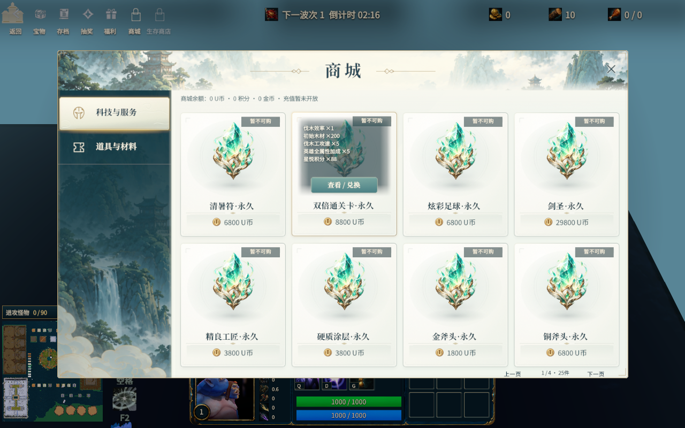
悬停：名称持续可见，效果说明软边遮罩，购买区域独立。为便于重复验收使用 Tools 强制悬停，未触发购买。
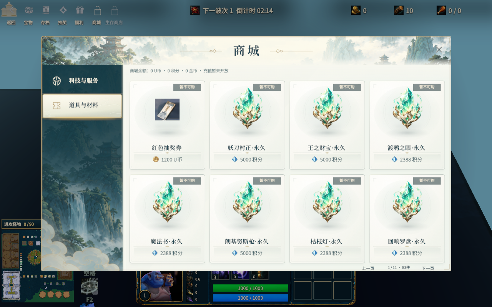
道具：原抽奖券缩略图 96px 内嵌，积分与 U 币各自显示；其余商品原图映射保持。
关闭商城后的原有 HUD
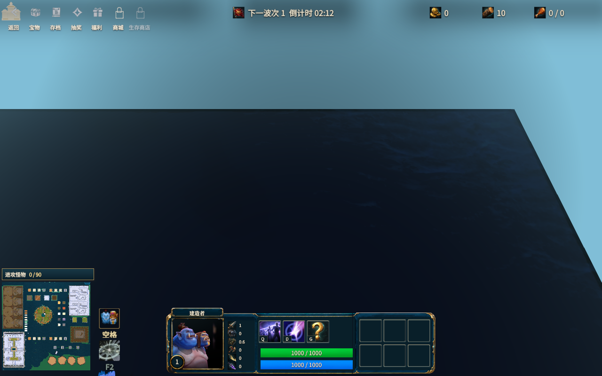
关键局部 · 原生像素
分辨率和字段适配 · 浏览器组件预览
以下通过生产 JS 组件、控制器和 CSS 的浏览器适配器组装。1280×720、1920×1080、2560×1440、2560×1080 均检查几何和交互；这些尺寸尚未逐一在 Panorama 游戏内验证。
已有类别 · 本地 CSV 预览
本地启用 114 条（108 兑换 + 6 付费配置），当前服务器只返回 108 条兑换：科技 25，道具 83，导航也只显示它返回的两类。没有为截图新增商品。四个空类别保持空态。
复用组件和状态
原项目弓、盾、长杆、球形物品、皮肤图和旧券图共用同一卡片壳。皮肤是兼容样例，礼包使用已有未启用的 7 奖励配置做 2×2 可滚动组件验收；均不是新上架商品。
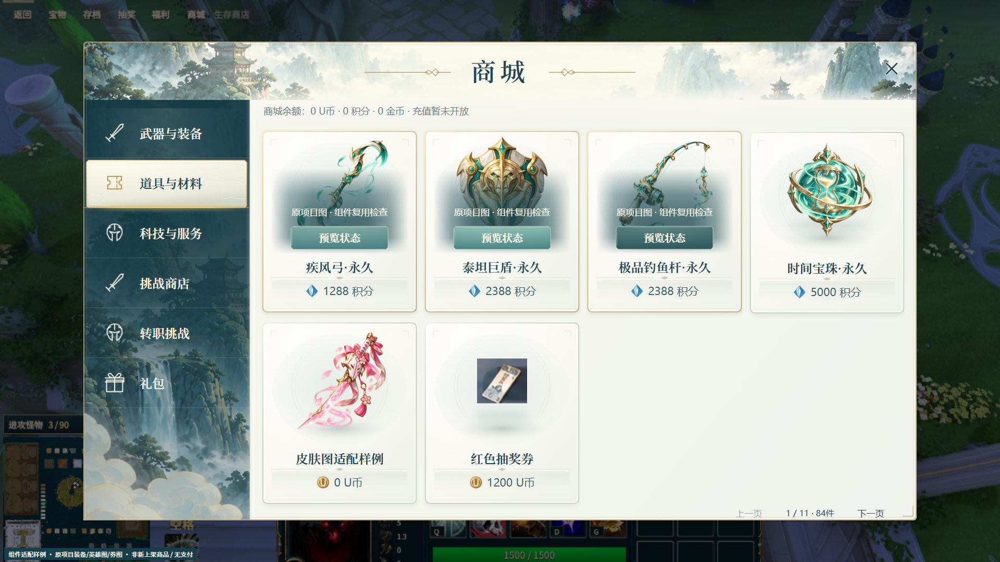
商品默认 / 悬停，导航默认 / 悬停 / 选中，按钮默认 / 悬停 / 按下。
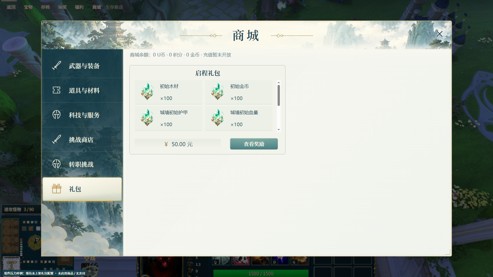
奖励数超过四项时内容区滚动，名称、价格和购买区保持独立。
24 个实质候选
每轮改变 1–3 个变量；从当时最佳版本生成。每张候选都有默认、悬停、局部和可恢复记录。前 20 个为参考组件组装比较，L21–T24 在生产组件和真实 CSV 预览中比较。
J01淘汰
减弱标题下方横带
代价 / 选择依据：背景过渡仍是窄带，侧栏深浅关系未改善变量与整页截图
{
"headerOpacity": 0.5
}默认全图 · 悬停全图J02保留
暖雾衔接象牙标题与商品底，顶部接缝更连贯
代价 / 选择依据：比原版少一点青灰层次，仍保留山水细节变量与整页截图
{
"header": "warm-mist"
}默认全图 · 悬停全图J03淘汰
接缝更克制
代价 / 选择依据：仅降低透明度导致原直线边缘仍显硬变量与整页截图
{
"seamOpacity": 0.35
}默认全图 · 悬停全图J04保留
薄雾与细线替换宽亮边，选中行光晕保持完整

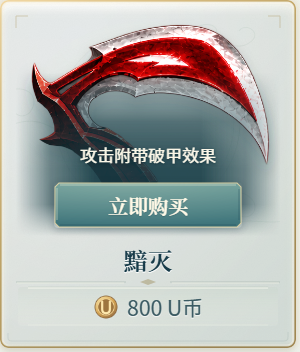
变量与整页截图
{
"seam": "soft"
}默认全图 · 悬停全图C05淘汰
象牙更暖，卡体保留玉石雕刻感
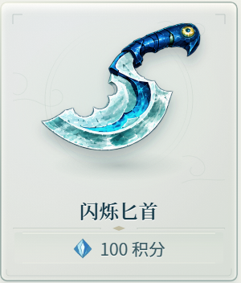
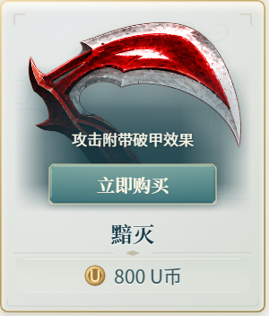
变量与整页截图
{
"card": "warm"
}默认全图 · 悬停全图C06淘汰
明显扁平化，减少外边与高光
代价 / 选择依据：浅色物品与底板层次过弱，失去浅玉质感变量与整页截图
{
"card": "flat"
}默认全图 · 悬停全图C07保留
细边框与较浅浮雕平衡商品轮廓，接近风格锚点
代价 / 选择依据：仍有微弱云纹，非纯白平面变量与整页截图
{
"card": "quiet"
}默认全图 · 悬停全图C08淘汰
投影显著减弱，网格留白更干净
代价 / 选择依据：卡体与窗口几乎贴平，hover层级不易察觉变量与整页截图
{
"cardShadow": 0.35
}默认全图 · 悬停全图C09保留
中等投影保留浅浮起，消除原版偏脏底边
代价 / 选择依据：卡片仍有轻微实体边界变量与整页截图
{
"cardShadow": 0.62
}默认全图 · 悬停全图I10保留
独立投影减弱至55%，浮空物品底部不再显脏
代价 / 选择依据：接触感略轻，仍能辨认投影变量与整页截图
{
"itemShadow": 0.55
}默认全图 · 悬停全图I11淘汰
缩小6%增加留白
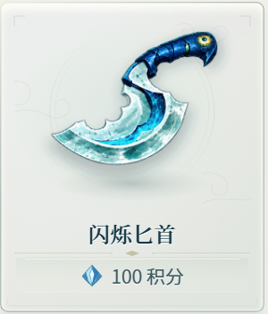
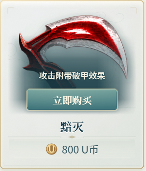
变量与整页截图
{
"itemScale": 0.94
}默认全图 · 悬停全图I12淘汰
展示底改成暖色柔雾
代价 / 选择依据：与卡体形成额外亮色块，原环纹更自然变量与整页截图
{
"well": "warm"
}默认全图 · 悬停全图N13保留
名称重量减轻、字距收紧，名称和价格形成清晰层次

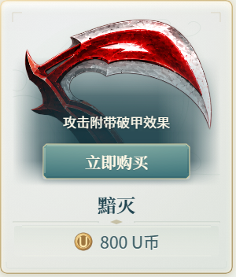
变量与整页截图
{
"title": "quiet"
}默认全图 · 悬停全图N14淘汰
柔软价格带减少下半部边缘
代价 / 选择依据：价格与卡体辨识不足，保留原内嵌信息底变量与整页截图
{
"price": "soft"
}默认全图 · 悬停全图H15淘汰
遮罩横向铺开，文字更稳

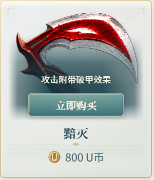
变量与整页截图
{
"overlay": "wide"
}默认全图 · 悬停全图H16保留
较轻遮罩与四边渐变让物品仍可见，价格不遮挡

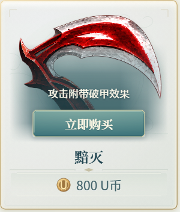
变量与整页截图
{
"overlay": "soft"
}默认全图 · 悬停全图B17保留
减少金边及高光，青玉按钮有清楚但克制的购买反馈
代价 / 选择依据：比原版立体感较低变量与整页截图
{
"button": "flat"
}默认全图 · 悬停全图B18淘汰
亮釉提高购买按钮可见性
代价 / 选择依据：亮边抢商品主体，背离极简方向变量与整页截图
{
"button": "gloss"
}默认全图 · 悬停全图V19淘汰
选中象牙材质稍暖
代价 / 选择依据：全图对比收益很小，原导航材质已符合参考，不叠加修改变量与整页截图
{
"nav": "quiet"
}默认全图 · 悬停全图V20淘汰
选中光晕减半，边缘更克制
代价 / 选择依据：底部金线与选中态弱化，保留原光晕与金线变量与整页截图
{
"navGlow": 0.5
}默认全图 · 悬停全图L21保留
长说明改用全展示区软边遮罩，消除额外硬矩形；仍看得到商品
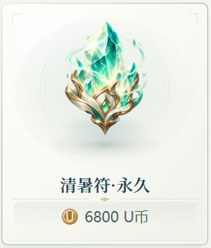
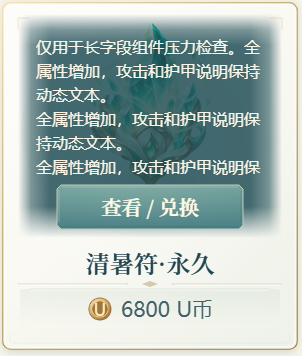
变量与整页截图
{
"longShade": 0.84
}默认全图 · 悬停全图L22淘汰
文字对比度更强

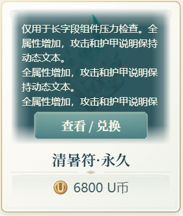
变量与整页截图
{
"longShade": 0.94
}默认全图 · 悬停全图T23保留
53x48原券图内嵌96px，减少放大模糊，保持原图映射；独立投影跟随实际展示比例
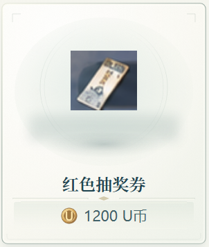
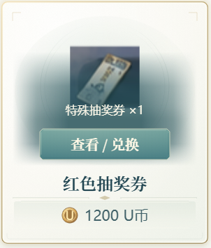
变量与整页截图
{
"legacySize": 96
}默认全图 · 悬停全图T24淘汰
128px券图轮廓更大
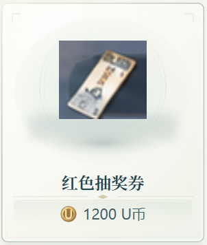
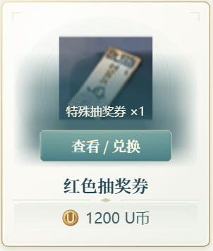
变量与整页截图
{
"legacySize": 128
}默认全图 · 悬停全图源文件与交付
底部 HUD 和业务代码沿用现有项目；未接真实支付。原商品图没有重绘或改写。低清旧券图仍有原图自带背景，是资源本身的限制。